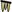

Vodopad Koćuša
Useful Information
| Location: |
Veljaci 88320.
(43.2493423, 17.4522203) |
| Open: |
MAR to APR daily 7-18. MAY daily 7-20. JUN to SEP daily 7-22. OCT daily 7-19. NOV to FEB daily 7-17. [2026] |
| Fee: |
Adults BAM 20, Children (7-18) BAM 10, Children (0-6) free. Inhabitants of Bosnia and Herzegovina: Adults BAM 10, Children (7-18) BAM 5. Groups (25+): Students BAK 10, Students from Bosnia and Herzegovina BAK 5. [2026] |
| Classification: |
 Rimstone Pool Tufa Deposits |
| Light: | n/a |
| Dimension: | |
| Guided tours: | self guided |
| Photography: | allowed |
| Accessibility: | no |
| Bibliography: | |
| Address: |
Javno poduzeće “Parkovi” d.o.o. Ljubuški, Nikole Šopa 8, 88320 Ljubuški, Tel: +387-39-844-413, Cell: +387-63-881-910.
E-mail: |
| As far as we know this information was accurate when it was published (see years in brackets), but may have changed since then. Please check rates and details directly with the companies in question if you need more recent info. |
|
History
Description
Vodopad Koćuša (Kocusa Waterfall) is located in the village Veljaci. It is 5 m high and 50 m wide, THE dam in the river is caused by the deposition of limestone from the limestone rich karst water. It is a typical karst feature, a tufa deposit in the limestone rich water which produces a dam. This natural dam was used for a long time to power watermills, so the village is actually just a group of former mills at the river. Today two of those mills were transformed into restaurants.
While waterfalls and other surface structures are normally freely accessible, this waterfall is part of a Park, but not a National Park it’s a municipal park. Nevertheless, it seems to be intended to protect the site. The park has several sites, this is only one of them. It’s possible to visit Kravica waterfall, Franciscan Museum in Humac, Roman military camp ih Gracine, Herceg Stjepan Fortres and Tombstones "stećci" ih Ljubuški with the same ticket. However, as here are restaurants which are actually at the waterfall, offering a good view to the waterfall, the entrance fee actually makes no sense.
 Search DuckDuckGo for "Kocusa Waterfall"
Search DuckDuckGo for "Kocusa Waterfall" Google Earth Placemark
Google Earth Placemark OpenStreetMap
OpenStreetMap KOCUSA WATERFALL LJUBUSKI, official website (visited: 05-NOV-2026)
KOCUSA WATERFALL LJUBUSKI, official website (visited: 05-NOV-2026) Index
Index Topics
Topics Hierarchical
Hierarchical Countries
Countries Maps
Maps